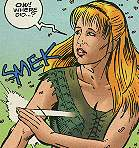
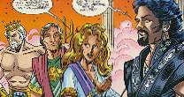

Xena: Warrior Princess/The Wrath of Hera #1 (of 2)
Title: The Wrath of Hera Part One of Two
Date: September 1998
Actual Release:
Pages: 32 (22 pgs story) plus pull-out poster
Cover Price: $2.95
Writer: Trina Robbins
Pencils: Gordon Purcell
Inks: Larry Mahlstedt
Letters: John Workman
Colors: Lisa Slykerman/Digital Chameleon
Editor: Dwight Jon Zimmerman
Painted Cover: John Van Fleet
Photo Cover: Unknown
NOTE: Xena: Warrior Princess created by Robert Tapert and John Schulian
OVERVIEW:
Xena and Gabrielle rescue a traveler, who happens to have been looking for them. He needs Xena to testify in a kidnapper's trial. Xena goes with him, leaving Gabrielle in a town to fend for herself. Unfortunately for Gabrielle, a certain god and goddess are also in town, and rather than point out his true lover to Hera, Zeus points out Gabrielle.
Gabrielle meets up with Zeus' lover, Leda, who is crying because her lover is married. Gabrielle wants to help, but is beset by the jealous Hera, who sends gnats to bite Gabrielle. When the gnats aren't enough, Hera sends in satyrs to carry her off. Gabrielle fights them, and then the gnats attack them, and Gabrielle escapes.
Hera calls in Ares, who snitched on Zeus in the first place, and Ares tells how Zeus turned himself into a swan to seduce Leda. Hera, inspired, turns Gabrielle into a duck.
COMMENTS:

The traveler the pair saves is the addistant to the mayor of Colitus, whose son Xena rescued. Xena can't recall, as she's rescued so many.
Xena tells Gabrielle that they will meet in their favorite "Inn", a barn outside of the town.
A speech balloon error makes it look like Zeus is saying Hera's line on page six. Another coloring error hides the fact that Leda is running away from Zeus and Hera in the top panel on page seven.
Gabrielle naturally wants to help Leda, but doesn't have a clue just how much she's helping by taking the fall. Hera can't believe that Gabrielle is holding out so well against her various enchantments.
CONCLUSION:
A fun first issue, with a neat little cliff-hanger.
Review Date 27 Nov 1998 by Laura Gjovaag
Xena: Warrior Princess/The Wrath of Hera #2 (of 2)
Title: The Wrath of Hera Part Two of Two
Date: October 1998
Actual Release:
Pages: 32 (22 pgs story) plus pull-out poster
Cover Price: $2.95
Writer: Trina Robbins
Pencils: Gordon Purcell
Inks: Claude St Aubin
Letters: John Workman
Colors: Lisa Slykerman/Digital Chameleon
Editor: Dwight Jon Zimmerman
Painted Cover: John Van Fleet
Photo Cover: Unknown
NOTE: Xena: Warrior Princess created by Robert Tapert and John Schulian
OVERVIEW:
Gabrielle is waiting for Xena when Xena arrives at the barn, but Xena doesn't recognize her friend... the duck. Gabrielle can't communicate with Xena, and Xena goes off to the village to look for her. In the meantime, Gabby the duck stops a hunter from killing a duck for dinner. The duck, Diomedes, realizes that Gabrielle is enchanted and shows her the way to a good wizard who can help. Unfortunately, the wizard recognizes that Hera cast the spell but cannot help.
With the news that Hera is to blame, Gabby the duck heads to Hera's temple and pecks at her priestess. Then Gabby squaks at Hera's statue until Hera appears. Hera turns her back into a human, and Gabrielle demands that Hera explain her actions. When she hears the charges against her, Gabrielle demands a hearing before the gods of Olympus.
Once in Olympus, Ares realizes that Hera has the wrong gal. Rather then cause a scene, he asks her to apologize to Gabrielle. Hera apologizes and sends Gabrielle back to earth, rather abruptly.
Once back on Earth, with riches given to her by Hera, Gabrielle goes to Leda to warn her. She takes Leda to the docks to put her on a ship and get her away from Hera's wrath. At the docks, Hera sends a madness to make the sailors think a monster is attacking. Leda makes the ship, and gets out of Hera's power.
Xena finally finds Gabrielle.
COMMENTS:

Gabrielle goes to Olympus dressed in a window covering. As a duck, she hadn't needed clothing, and Hera didn't allow her time to get re-dressed before the trip.
Leda is pregnant, and Gabrielle wants to save her and the baby.
Xena has no clue that Gabrielle has had these adventures, as she missed all the excitement.
I'm not sure why Hera thought that Gabrielle would lead her to Leda, but she did. She almost got Leda too.
CONCLUSION:
A fun little story, with another twist on the gods of Olympus.
Review Date 27 Nov 1998 by Laura Gjovaag